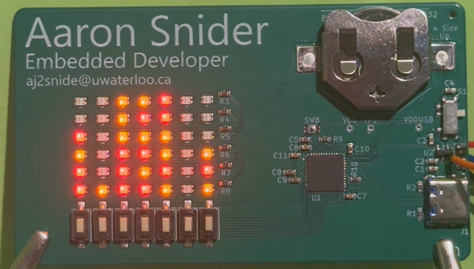
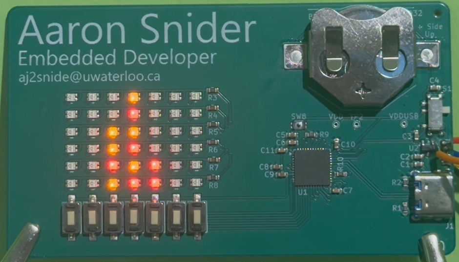
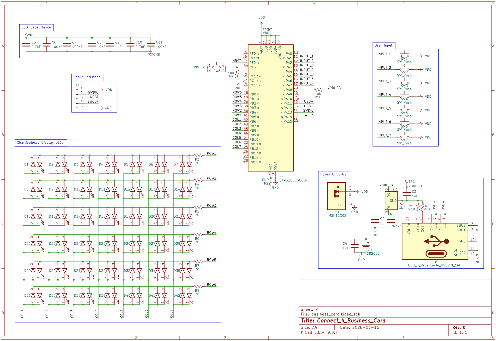
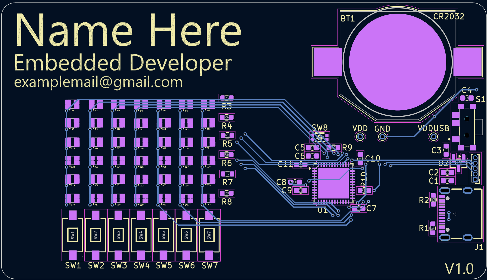
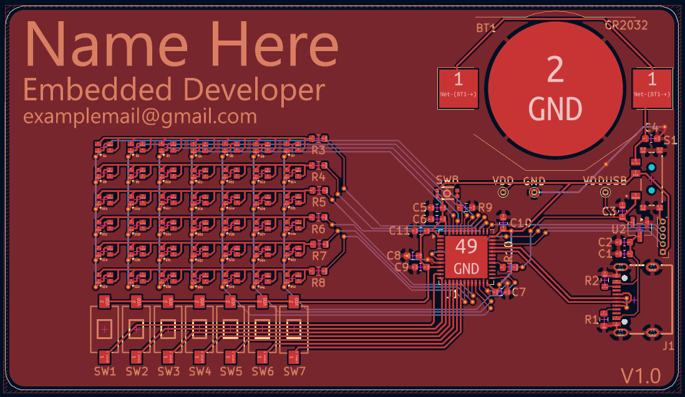
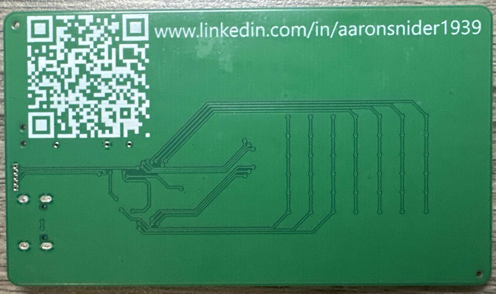

Around 4 months ago, I found myself looking into networking events in order to connect with people in the embedded systems field. At the same time, I was being asked about my project portfolio during applications and interviews. I thought to address these, I could have a project which would serve both as a networking tool, and a convenient link to a project portfolio. I decided that an embedded systems based version of the classical business card would be a good way to present these, and set out to create a business card sized interactive project powered only using a coin cell battery.

The game of Connect-4 is typically played between two players with the use of a tabletop board and two sets of colored pieces. The players take turns dropping the pieces into one of 7 columns, where they fall into the lowest available slot. The first player who makes a contiguous horizontal, vertical, or diagonal line of 4 pieces wins. The simplicity, ubiquity, and straightforwardness of the game makes it the perfect candidate for implementation on a business card.
Firmware
The firmware for this is written in bare-metal C, using direct register accesses. HAL functions are used to abstract a few simple writes, and for complex peripheral configurations. Much of the configuration was set up with the use of the STM32CubeMX, and development was done using the STM32 VSCode extension. The LED matrix is controlled using a simplified version of “Charlieplexing”, which takes advantage of the microcontroller’s GPIO input state being high impedance to minimize the number of pins needed for N LEDs. My version uses row and column pins to simplify the PCB layout, which is less efficient but simplifies routing. The LED matrix is controlled through dual timer triggered DMA channels to write directly to GPIO output and mode registers from an internal buffer. This runs in circular mode, and will iterate over each of the LEDs individually. In order to keep a consistent brightness, the ones which are intended to be off are still visited for an equal amount of time.
Features
Other main features include:
An AI opponent controlled using a minimax algorithm variant to select optimal moves. It includes configurable tree search depth, transposition table size, and heuristic function weights. The implementation of these was inspired by online guides, but specific implementations such as for the heuristic functions are entirely original.
Voltage monitoring / brown out protection peripheral, enabled with a conditional reset trigger to activate the option bytes. This was chosen at 2.2V, which is around the safe discharge limit of the CR2032 battery. These persist across resets, flashes, etc and prevent battery physical integrity deterioration or failure.
User input is controlled through an interrupt for each pushbutton, for a total of 7. During startup, these are used for alternative user configuration. The defaults are that the user plays first, and the difficulty is set to 5. With the user configurations, the AI can be configured to a difficulty from 1 to 6, and the AI can make the first move. Increasing the difficulty level will exponentially increase the duration of time each AI move takes.
Playing against the AI

Power efficiency
In general, the firmware is written to prioritize efficiency. The internal clock of the STM32U07xxx runs at a maximum of 56 MHz, and that is at the maximum current consumption. In order to limit the current consumption, the clock can be slowed at the cost of additional computation time for the opponent algorithm. The CR2032 battery is rated for a continuous current draw of about 0.2mA. The MCU alone will draw up to 4.3mA at the highest clock speed, and each LED light will add to that total. This level of consumption versus the rating of the battery is an intentional compromise. It is assumed that the user for this device will not use it for an extended period, and thus the reduction in mAh is acceptable.
Hardware architecture
The hardware architecture for this project is centered around the concept of power efficiency given the requirement of using the CR2032 battery. The chosen MCU is the STM32U073CCT6, one of ST’s power efficient microcontrollers which also provides other helpful features. The notable ones for this project are the voltage monitoring/BOR, 2 GPIO ports, the timer/DMA peripherals, and larger RAM than for the STM32U03xx line. As the LED matrix uses raw register writes, it is safer to isolate the entire operation to a port with nothing else on it. Since the debug port is on GPIOA, I chose GPIOB for the LED matrix operation, and GPIOA to handle the user input. The RAM is important to have headroom for the large stack utilisation of the recursive minimax move choice algorithm calls.



Now that the concept has been proven, the next production run hardware version will focus on minimizing unnecessary components and bringing down the cost. This will involve removing the unused BOOT0 button, the USB-C port, and associated LDO. These components either were never within project scope, or meant to be used during hardware debugging. In this new version, a PMOS will be added for reverse polarity protection in the case where the battery is inserted in the wrong direction. The component labels will be removed for visual cleanliness, given that an automated assembly service is being used. Thought was given to implementing a built-in NFC antenna and IC in place of the QR code, but the layout and complexity were determined not to be justified by the improvement.

Main lessons learned:
Think of the use case.
The first iteration of this design contains a QR code on the board which points to the github repository. There are two issues with this: QR codes are typically scanned on mobile devices, and a github page is not viewed best on a phone. The second is the static nature of the link, meaning that this error could not be corrected. To resolve these issues, I have instead set up a link which will automatically redirect the user to a different web address. You can see this by visiting https://aarosnid.github.io/r/?id=business-card-v2. By doing this, I can still have a static initial page built into the hardware, and then later choose a better final location.
Beware of micro-optimizations
Many of the details I considered during the design process had little impact on the final system design. One example of this is the consideration given to the GPIO inputs default resistor configuration, where pull-downs were chosen to reduce the amount of leakage current. Another example of this is many of the connect 4 board functions, which use precomputed magic numbers and unwrapped algorithms in an attempt to optimise their implementation on the project’s MCU. These either have little impact, or in the case of the algorithms could be better optimized by the compiler. Rather than focusing on these optimisations, priority should have been given to getting a working prototype where required optimisations would be apparent.
Overall, this project has been a good way to learn about low-level hardware control and algorithm implementation under real world constraints. Working around the power budget, board size, and cost all guided the project during development. I haven’t yet had the opportunity to hand these out, but that’s the next step once the next hardware version is ready. If you want one, don’t be afraid to reach out!